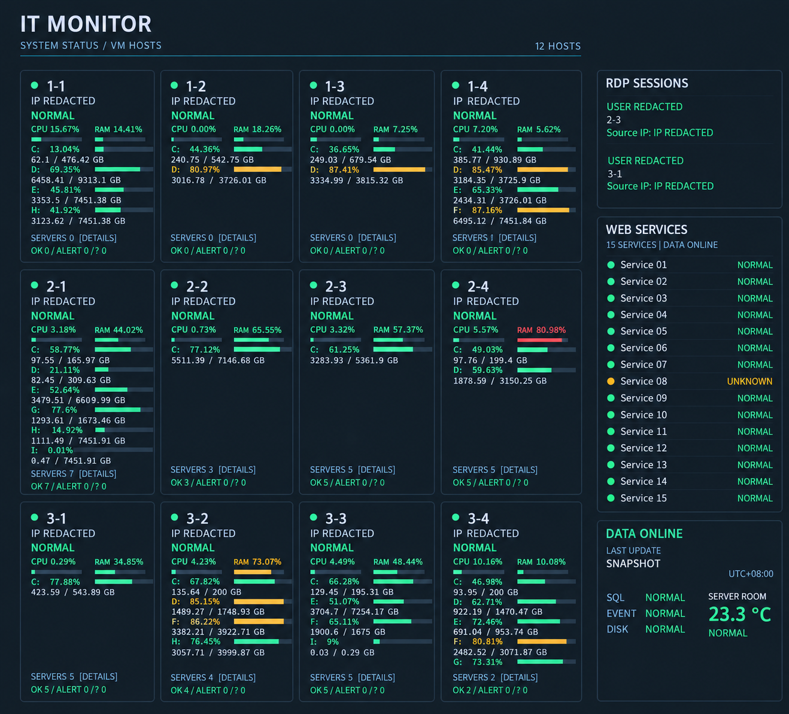

讓維運更穩定，
讓工作更有效率。
黃偉誠
IT / MIS 維運工程師
以自動化、監控與系統整合，讓日常維運更有章法。
減少重複作業，把時間留給真正需要解決的問題。
AUTOMATION / MONITORING / INTEGRATION
PowerShell自動化腳本
SQL Server事件與狀態儲存
FlaskWeb 儀表板
Email異常與恢復通知
Telegram即時訊息通知
排程執行資料處理介面呈現通知發送
依實際專案整理的監控架構
01 / SELECTED PROJECTS
把日常問題，
變成系統化的解法。
從基礎架構到內部工具，
以實際維運需求為起點，建立可追蹤、可持續的工作流程。
01 IT MONITORING
企業 IT 集中式監控平台
將分散的單機腳本整合成集中式監控架構。以 PowerShell 蒐集系統狀態、SQL Server 保存事件，透過 Flask 呈現資訊並自動發送通知。
- 監控約 12 台正式 Server / VM Host
- 整合主機資源、RDP、磁碟、15 項 Web 服務與機房溫度
- 異常首次通知、持續異常抑制、恢復通知
- 保留事件與歷史紀錄，支援後續問題追查
PowerShellSQL ServerFlaskEmail / Telegram
查看實作細節
從腳本到完整資料流程
建立 MonitorEvent、MonitorLog、ServerDiskStatus、ServerResourceStatus、RDP Session History 等資料結構。Dashboard 直接查詢 SQL 中的狀態，降低對本機快取的依賴。
為舊環境保留相容性
針對不同 Windows Server 與 PowerShell 版本，調整 WMI、TCP 與網路檢測方式，並維護排程與告警流程。

依實際介面製作的去識別化展示圖 · 經 AI 圖像處理
開啟大圖查看細節 ↗
02 / VIRTUALIZATION
Hyper-V 複寫與備份驗證
從複寫狀態到 VM Export，讓虛擬化維運與備份檢查有跡可循。
Hyper-VEvent LogPowerShell
查看實作細節
整合 Replication Warning / Critical、複寫百分比與 Hyper-V Event Log；驗證 VM Export 與備份狀態，處理 Merge Job / AVHDX，並監控 Host CPU、Memory、Disk。
03 / INTERNAL TOOLS
出勤查詢與資產管理
將內部資料整理成易用的查詢介面，支援日常行政與 IT 設備管理。
PythonVue.jsSQL
查看實作細節
於錢隆科技使用 Python、Vue.js、SQL 建置打卡與請假查詢系統，整合出勤資料並製作儀表板；另自行建置資產盤點網站，協助管理資訊設備。
04 / SECURITY & GOVERNANCE
資安監控與制度維運
結合端點監控、弱點修補與文件管理，把資訊安全落實到日常作業。
WazuhFortiGateISMS / ISO
查看實作細節
實際建置與操作 Wazuh，進行基本端點監控與安全資訊分析；依弱掃與滲透測試報告執行修補，參與防毒政策、USB 掃毒、資安教育、ISO 四階文件整理與內部稽核。
02 / EXPERIENCE在現場累積，
用技術持續進化。
從駐點支援、企業資訊管理，到自動化與系統整合。
AMTouch
目前職務IT / MIS 維運工程師
負責企業 IT 基礎架構、Windows Server、AD、Hyper-V、VMware、NAS、備份與網路維運。以 PowerShell、Python、SQL Server 與 Flask 建立集中式監控及內部工具。
錢隆科技股份有限公司
IT / MIS 系統與資安管理工程師
負責內部資訊設備與使用者支援；建置出勤查詢、資產盤點及 Wazuh，參與 ISO 文件整理、弱點修補與資安維護。
創虹科技有限公司
駐點工程師 · 基隆看守所
維護電腦、伺服器、網路與周邊設備。執行 FortiGate 政策管理、IP 管理、防毒與弱點修補，並提供使用者支援與資安教育。
03 / EXPERTISE串起系統，
也串起解決問題的能力。
基礎架構 × 自動化 × 內部工具 × 資訊安全
系統與企業網路
Windows Server、AD、DNS、GPO、WSUS、RDP、VeloCloud、VoIP
維運自動化
PowerShell、Windows Task Scheduler、異常事件與恢復通知、舊版環境相容性
資料與內部工具
Python、SQL Server、Flask、Vue.js、API 串接、監控資料結構與 Web 儀表板
虛擬化與備份
Hyper-V、VMware、VM Replication / Export、NAS、SyncBack、Tape Drive
資安與資訊管理
FortiGate、Wazuh、弱點修補、防毒政策、ISMS、ISO 文件與內部稽核
04 / EDUCATION & CERTIFICATIONS
學習，是持續的事。
2017.09 — 2021.07景文科技大學
行動商務與多媒體應用系 · 學士
資格認證
乙級、丙級電腦軟體應用技術士
MOCC Word / Excel / PowerPoint 2010 專業級認證